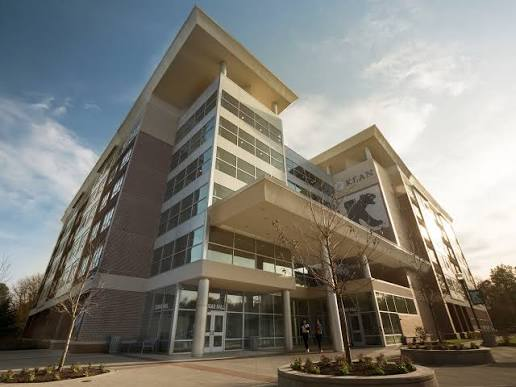
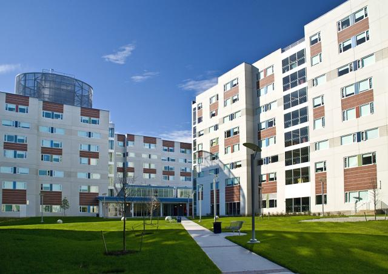

Residence life is more than a room. It is a place to study,
reset and share everyday campus life with other students.

Residence hall / 01
Cougar Hall
Freshman-oriented suite-style living with two double
bedrooms connected by a kitchenette and private bathroom.
Shared lounges, a game room, business center and other
common spaces make room for both focus and community.

Residence hall / 02
Freshman Residence Hall
Suite-style rooms connect two double bedrooms to a
common area and private bathroom, with a Learning Center,
lounge, game room and laundry facilities close by.
01STUDY
Learning Center and shared study spaces
02HANG OUT
Lounges and game rooms
03LIVE
Suites, common areas and laundry
04SHARE
A community built into the day
Different starting points
TWO WAYS
TO START
AT KEAN
01
Live on campus
Residence halls, lounges, study spaces, dining and campus
activities can become part of your everyday routine.
02
Commute to campus
Classes, student organizations, events, academic resources
and campus life are still part of your Kean experience
when you live at home.
Different starting points. Same Kean community.
02 / Learn
YOUR
FIRST-YEAR FOUNDATION
Your freshman schedule is a mix of major-related coursework
and General Education requirements.
A useful starting point
These areas help build the skills and context you will use
across your degree. Exact courses can vary by major,
especially mathematics.
Transition to Kean
GE 1000 is a one-credit course about academic and
student life, General Education and university resources.
College Composition
Build a foundation for clear, effective college writing.
Mathematics
The requirement varies based on your major.
Speech Communication
Practice communication and civic participation.
Research + Technology
Develop research and information skills for college work.
03 / Choose
WHAT CAN
I STUDY?
Start with an area that sounds like you. Select an area to
reveal the kinds of work and questions it can open up.
Accounting, finance, marketing, economics and business analytics.
Computer Science, Artificial Intelligence, Biology,
Chemistry and Information Technology.
Nursing, Public Health, Exercise Science, Psychology
and Speech-Language-Hearing Sciences.
Elementary, early childhood, biology, chemistry,
mathematics and Spanish education.
Graphic Design, Architectural Studies, Interior Design,
Industrial Design and Studio Art.
Communication, English, History, Political Science,
Sociology, Music and Theatre.
04 / Your first semester
YOUR FIRST
SEMESTER
One clear path from getting oriented to finding a rhythm
that feels like your own.
01
BEFORE YOU ARRIVE
Get oriented
Orientation introduces you to Kean, the campus,
university resources and the people who will help
you get started.
02
FIRST CONNECTION
Orientation
New Student Orientation introduces incoming freshmen
to campus culture and university resources through
sessions led by Orientation Leaders.
03
WEEK ONE
Start classes
Begin major-related coursework alongside General
Education requirements while you learn your new schedule.
04
FIND YOUR FOOTING
Transition to Kean
GE 1000 helps students transition into academic and
student life and become familiar with university
resources. It is required for students entering with
fewer than 30 earned credits.
05
BUILD YOUR ROUTINE
Find your rhythm
Balance classes, studying, campus activities and the
way you choose to participate in campus life.
06
LOOKING AHEAD
Spring reset
Use your first semester's experience to adjust your
habits, stay involved and plan what your second year
can look like.